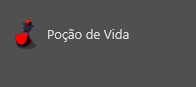
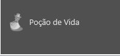

Tag imageCheckBox
Tag imageCheckBox
A tag/componente imageCheckBox representa uma caixa de marcação na interface no qual é possível personalizar a imagem apresentada quando a caixa está marcada e quando está desmarcada.
Herança
O imageCheckBox possui todas as características de uma tag visual. Veja:
Características
Além das características herdadas, a tag imageCheckBox também possui as seguintes características:
Propriedades e atributos
| Propriedade | Tipo | Valor Padrão | Descrição |
|---|---|---|---|
| checked | Boolean | false | Indica se a caixa de marcação está marcada (true) ou desmarcada (false) |
| field | String | \<string vazio> | Caminho de um campo no NodeDatabase. Quando associado, o imageCheckBox passa a apresentar e salvar o conteúdo no campo informado. Veja também: Lua Form e NodeDatabase NodeDatabase |
| checkedImage ou imageChecked | String | \<string vazio> | Define a URL/caminho de onde se encontra a imagem que será exibida quando a caixa de marcação estiver marcada. Este valor: Pode ser um endereço de internet (exemplo: “http://xxxx.com.br/a.png”) Pode ser o caminho de um arquivo contido no pacote do plugin Pode ser um arquivo que se encontra no HD Virtual do plugin instalado. |
| uncheckedImage ou imageUnchecked | String | \<string vazio> | Similar à propriedade "checkedImage", porém contém o endereço da imagem que será exibida quando a caixa de marcação estiver desmarcada. |
| optimize | Boolean | false | Quando true, o SDK salvará uma cópia das imagens de exibição já redimensionadas para o melhor tamanho. Utilize este atributo apenas em controles image que não sofrem constante mudança de tamanho. |
| autoChange | Boolean | true | Define se o imageCheckBox irá alternar a propriedade checked automaticamente quando o usuário clicar nele. False significa que você tratará isso por conta própria e alterará a propriedade checked quando for mais propício. |
{kind=link}
Eventos
| Nome do evento | Descrição |
|---|---|
| onChange | Este evento é invocado quando a marcação do imageCheckBox sofre alteração. |
Exemplos:
Exemplo 1 - Usando ícones de poção no imageCheckBox
| \<?xml version="1.0" encoding="UTF-8"?> \<form name="frmFichaTeste"> \<layout left="10" top="20" width="200" height="32"> \<imageCheckBox width="32" align="left" checkedImage="/imagens/potion.png" uncheckedImage="/imagens/potion_off.png"/> \<label align="client" text="Poção de Vida" vertTextAlign="center" margins="{left=5}"/> \</layout> \</form> |
|---|
 
Created with the Personal Edition of HelpNDoc: What is a Help Authoring tool?